การวิเคราะห์แบบโนด Nodal analysis — the unknowns are node voltages; write KCL at every node
Nodal analysis The unknowns are node voltages; write KCL at every node
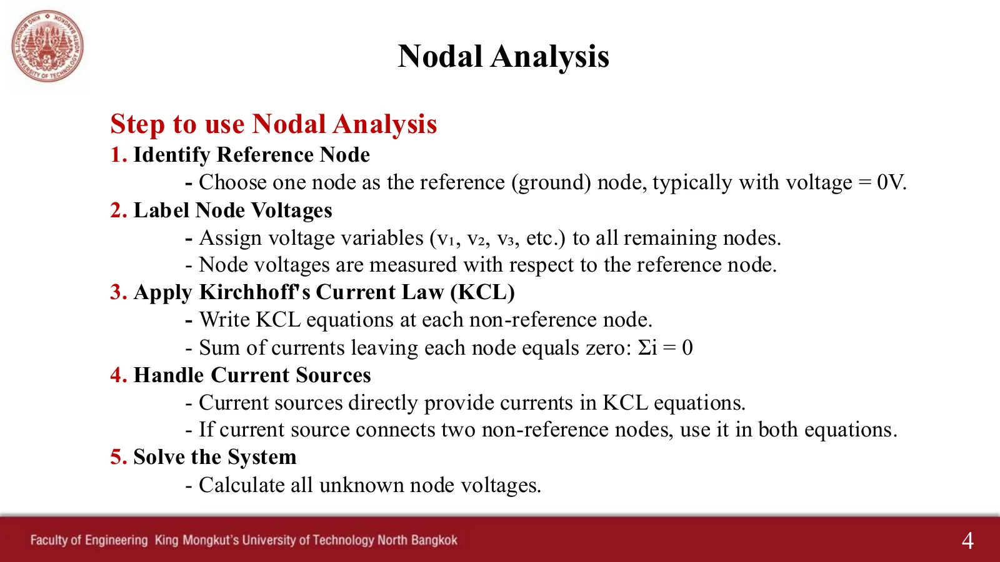
สไลด์บทที่ 4 หน้า 4 · แตะรูปเพื่อขยายChapter 4 slides, p. 4 · tap to enlarge
วิธีโนดใช้แรงดันโนดเป็นตัวแปร คือแรงดันของแต่ละโนดเทียบกับโนดอ้างอิง (กราวด์) ที่กำหนดให้เป็น 0 V วงจรที่มี N โนดจึงมีตัวแปร N − 1 ตัว และเขียนกฎกระแสของเคียร์ชอฟฟ์ (Kirchhoff's Current Law, KCL) ได้ N − 1 สมการ สไลด์หน้า 4 สรุปเป็นห้าขั้น ในภาพจำลอง ลวดที่ต่อถึงกันมีสีเดียวกัน (เป็นโนดเดียวกัน) ป้ายข้างโนดคือแรงดันโนด ("?" ถ้ายังไม่รู้) ในขั้น KCL ลูกศรสีเหลืองชี้ออกจากโนดทุกกิ่ง เพราะเราเขียนกระแสที่ไหลออกเสมอ และกระแสจะเริ่มไหลเมื่อแก้ระบบสมการเสร็จ หน้านี้มี 6 โจทย์ เรียงทีละข้อ: Ex 1–3 และการบ้านข้อ 1 จากสไลด์ ตามด้วยแบบฝึกหัด Ex.1 และ Ex.6 ที่มีเฉลยลายมือ
Nodal analysis takes the node voltages as unknowns: the voltage of each node relative to the reference node (ground), which is set to 0 V. A circuit with N nodes therefore has N − 1 unknowns and gives N − 1 equations from Kirchhoff's Current Law (KCL). Slide p. 4 sums it up in five steps. In the simulations, wires joined together share one colour (they are one node), the tag beside a node is its voltage ("?" while unknown), in a KCL step the yellow arrows point out of the node on every branch because we always write the current leaving, and the current starts to flow once the system is solved. This page has 6 problems, one after another: Ex 1–3 and homework 1 from the slides, then exercises Ex.1 and Ex.6, which come with handwritten solutions.
$$ \begin{gathered} \sum I_{\text{out}} = 0 \ \text{ at every non-reference node} \\ I_{\text{out through } R} = \frac{v_{\text{this node}} - v_{\text{other end}}}{R} \\ \text{unknowns: } N - 1 \ \text{node voltages} \end{gathered} $$
Choose a reference node (ground = 0 V), usually the node joined to the most branches or the bottom node, and name the other node voltages → N − 1 unknowns.
Write KCL at every non-reference node: the current leaving through a resistor is always \((v_{\text{this node}} - v_{\text{other end}})/R\), so you never guess a current direction.
A current source goes in as its value: pointing out of the node +, pointing in − (a negative value goes in with its brackets).
A voltage source to the reference gives that node voltage at once; no KCL is needed there, so there are fewer equations (Ex 3).
With every node voltage known, every branch current follows from Ohm's law. A negative node voltage means the node is below the reference.
โนดอ้างอิงและจำนวนสมการ (สไลด์หน้า 2–3)
The reference node and the number of equations (slides pp. 2–3)
สไลด์หน้า 2: วงจร N โนดต้องการแรงดันโนด N − 1 ตัว และสมการ KCL N − 1 สมการ หน้า 3: เลือกโนดที่ต่อกับกิ่งมากที่สุด (หรือโนดล่างสุด) เป็นโนดอ้างอิง รูปขวาของหน้า 3 คือวงจรเดิมที่วาดใหม่ให้เห็นว่ามีแค่ 3 โนด ในห้องเขียนกำกับว่า \(V_{AB} = V_A - V_B\) คือแรงดันของ A เทียบกับ B
Slide p. 2: an N-node circuit needs N − 1 node voltages and N − 1 KCL equations. Page 3: choose the node joined to the most branches (or the bottom node) as the reference. The right-hand drawing on page 3 is the same circuit redrawn to show it has only 3 nodes. In class it was noted that \(V_{AB} = V_A - V_B\) is the voltage of A relative to B.
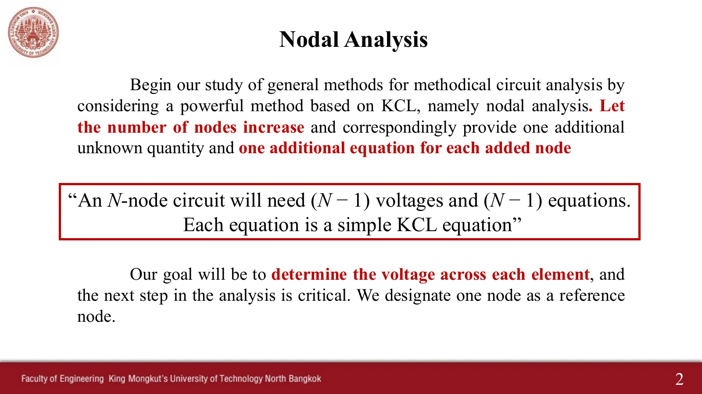
สไลด์หน้า 2 · แตะรูปเพื่อขยายSlide p. 2 · tap to enlarge
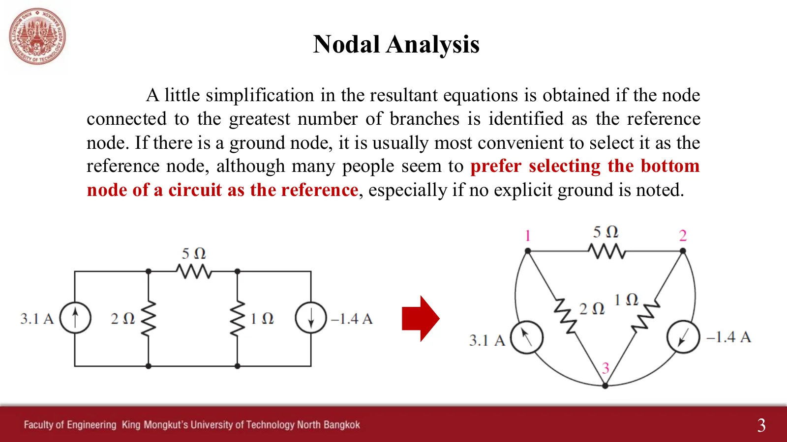
สไลด์หน้า 3 · แตะรูปเพื่อขยายSlide p. 3 · tap to enlarge
ดูสไลด์หน้า 2–3 ที่ผู้สอนเขียนในห้อง (ธ.ค. 2568)See slides pp. 2–3 as written in class (December 2025)
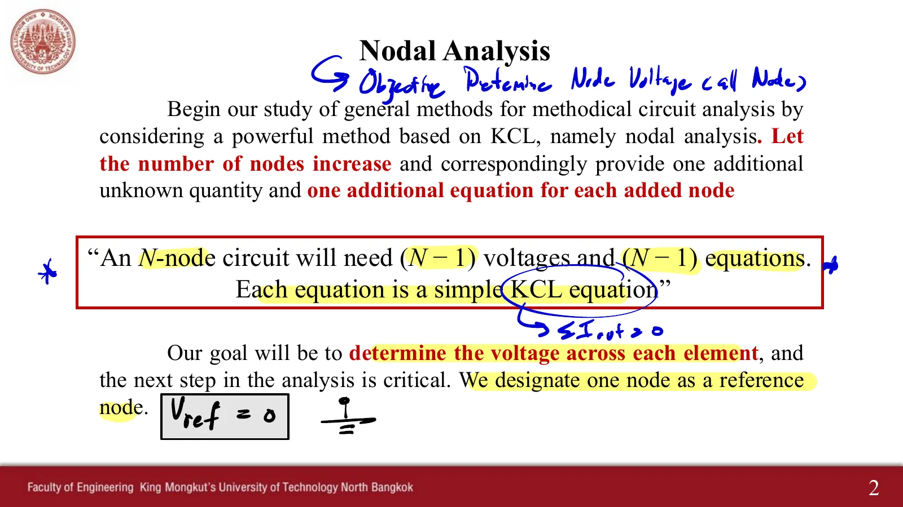
หน้า 2: เป้าหมายคือแรงดันโนดทุกโนด \(\sum I_{out} = 0\) และ \(V_{ref} = 0\)p. 2: the aim is every node voltage; \(\sum I_{out} = 0\) and \(V_{ref} = 0\)
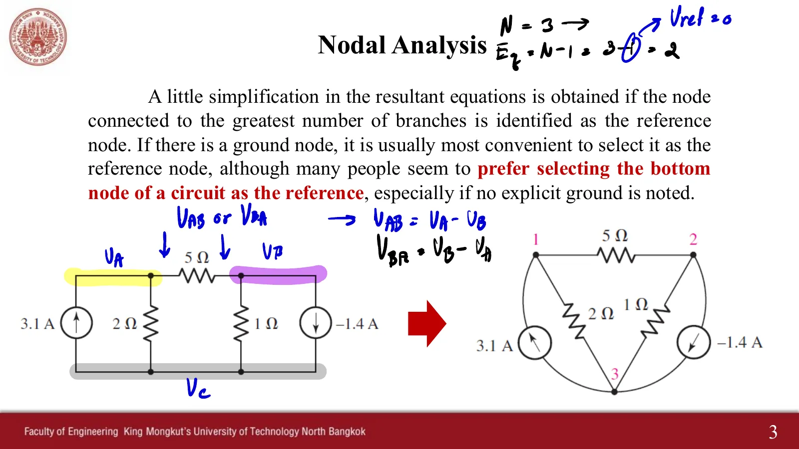
หน้า 3: N = 3 จึงมี 2 สมการ และ \(V_{AB} = V_A - V_B\)p. 3: N = 3 gives 2 equations, and \(V_{AB} = V_A - V_B\)
1
Ex 1: หาแรงดันโนด \(v_1\) และ \(v_2\)
Ex 1: find the node voltages \(v_1\) and \(v_2\)
สไลด์บทที่ 4 หน้า 5 · Hayt Practice 4.1
Chapter 4 slides, p. 5 · Hayt Practice 4.1
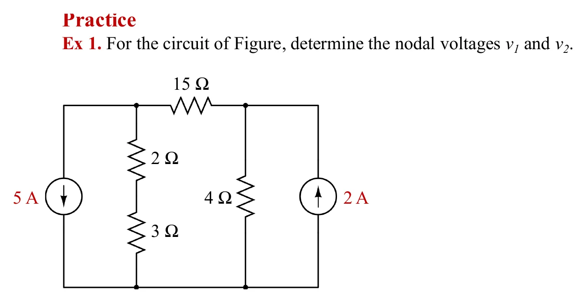
โจทย์จากสไลด์หน้า 5 · แตะรูปเพื่อขยายThe problem, slide p. 5 · tap to enlarge
ดูเฉลยที่ผู้สอนเขียนในห้อง (ธ.ค. 2568)See the teacher's in-class working (December 2025)
หน้าลายมือต่อ: \(-4v_1 + 19v_2 = 120\) ได้ \(v_1 = -18.125\) V, \(v_2 = 2.5\) V และ \(I_2 = -3.625\) AHandwritten page: \(-4v_1 + 19v_2 = 120\), so \(v_1 = -18.125\) V, \(v_2 = 2.5\) V and \(I_2 = -3.625\) A
2
Ex 2: หาแรงดันคร่อมแหล่งจ่ายกระแสแต่ละตัว
Ex 2: find the voltage across each current source
สไลด์บทที่ 4 หน้า 6 · Hayt Practice 4.2 · ในห้องไม่ได้เขียนวิธีทำข้อนี้
Chapter 4 slides, p. 6 · Hayt Practice 4.2 · not worked in class
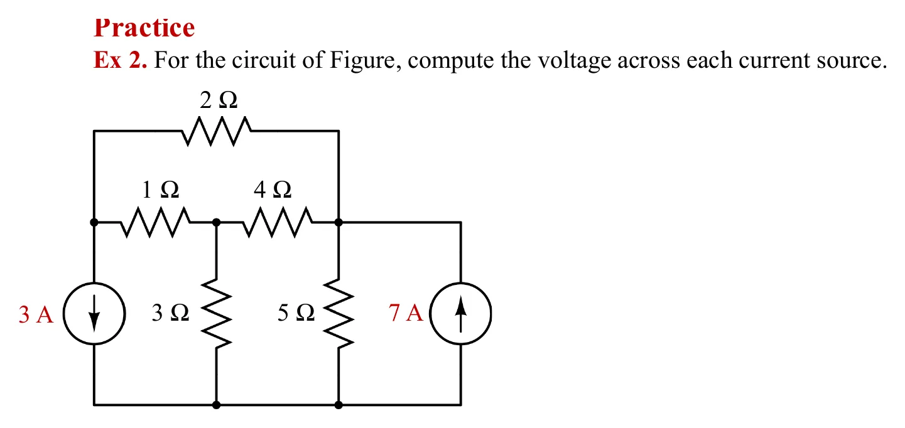
โจทย์จากสไลด์หน้า 6 · แตะรูปเพื่อขยายThe problem, slide p. 6 · tap to enlarge
3
Ex 3: หากำลังที่แหล่งจ่าย 2 V จ่าย
Ex 3: find the power supplied by the 2 V source
สไลด์บทที่ 4 หน้า 7 · Hayt Example 4.7
Chapter 4 slides, p. 7 · Hayt Example 4.7
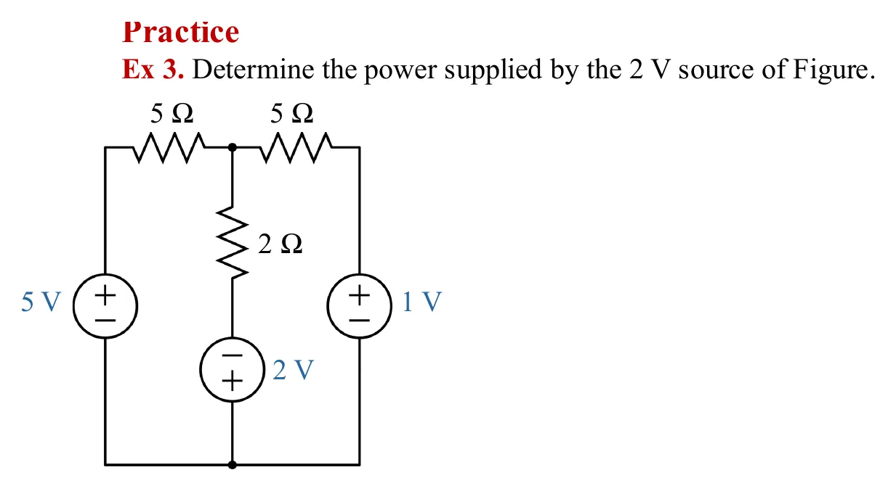
โจทย์จากสไลด์หน้า 7 (ตัวต้านทานซ้ายบนพิมพ์เป็น 5 Ω) · แตะรูปเพื่อขยายThe problem, slide p. 7 (the top-left resistor is printed as 5 Ω) · tap to enlarge
ฉบับแจกพิมพ์ตัวต้านทานซ้ายบนเป็น 5 Ω แต่ในห้องแก้เป็น 4 Ω ซึ่งตรงกับ Ex 7 (วงจรเดียวกันในหน้า 4.3) และ Hayt Example 4.7 หน้านี้ใช้ 4 Ω
The handout prints the top-left resistor as 5 Ω, but it was corrected to 4 Ω in class, as in Ex 7 (the same circuit on page 4.3) and Hayt Example 4.7. This page uses 4 Ω.
ดูเฉลยที่ผู้สอนเขียนในห้อง (ธ.ค. 2568)See the teacher's in-class working (December 2025)
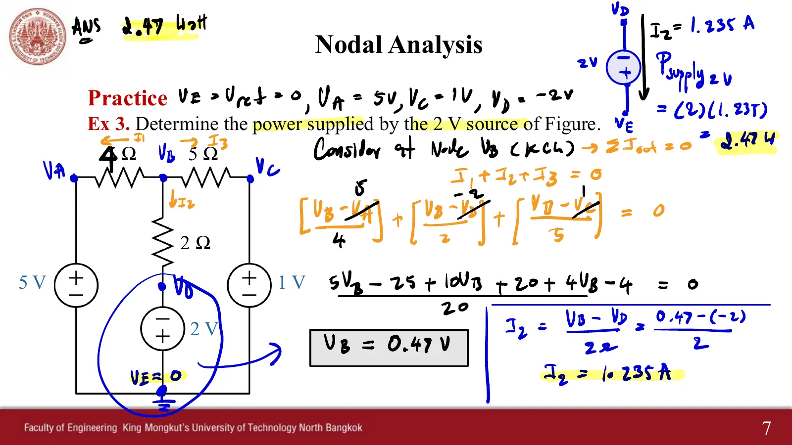
หน้า 7: แก้ 5 Ω เป็น 4 Ω ได้ \(V_B = 0.47\) V, \(I_2 = 1.235\) A และกำลัง 2.47 Wp. 7: 5 Ω corrected to 4 Ω; \(V_B = 0.47\) V, \(I_2 = 1.235\) A and 2.47 W
4
การบ้านข้อ 1: ใช้วิธีโนดหา \(v_1 - v_2\)
Homework 1: use nodal analysis to find \(v_1 - v_2\)
The sheet has 7 problems. Those solved by nodal analysis without a supernode are on this page (Ex.1, Ex.6); Ex.4 is on page 4.2 and the mesh problems are on pages 4.3–4.4. The handwritten solution files are named Ex.1–Ex.6, which does not match the problem numbers (file Ex.2, for instance, solves problem Ex.6), so this page always quotes the problem number.
5
แบบฝึกหัด Ex.1: หาแรงดันคร่อม 2 Ω และกระแสใน 20 Ω
Exercise Ex.1: find the voltage across the 2 Ω and the current in the 20 Ω
แบบฝึกหัด Ex_Ch4 ข้อ Ex.1 · เฉลยลายมือไฟล์ Ex.1
Exercise sheet Ex_Ch4, problem Ex.1 · handwritten solution, file Ex.1
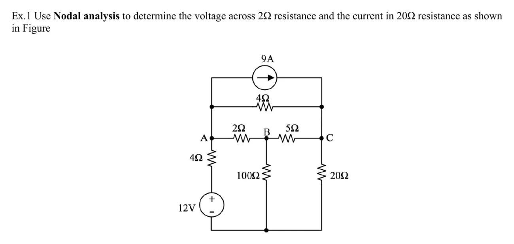
โจทย์แบบฝึกหัด Ex.1 · แตะรูปเพื่อขยายExercise Ex.1 · tap to enlarge
ดูเฉลยลายมือ (ไฟล์ Ex.1)See the handwritten solution (file Ex.1)
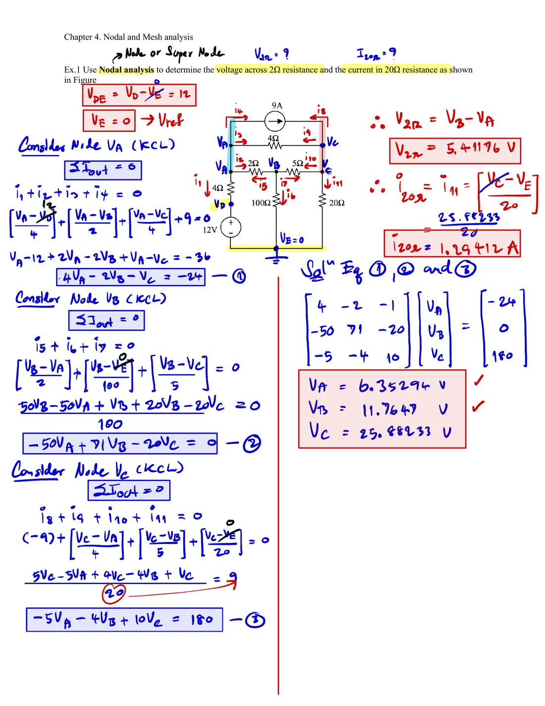
เฉลยลายมือแบบฝึกหัด Ex.1Handwritten solution of exercise Ex.1
6
แบบฝึกหัด Ex.6: หากระแส \(I_x\) และแรงดัน \(V_x\)
Exercise Ex.6: find the current \(I_x\) and the voltage \(V_x\)
แบบฝึกหัด Ex_Ch4 ข้อ Ex.6 · เฉลยลายมือไฟล์ Ex.2
Exercise sheet Ex_Ch4, problem Ex.6 · handwritten solution, file Ex.2
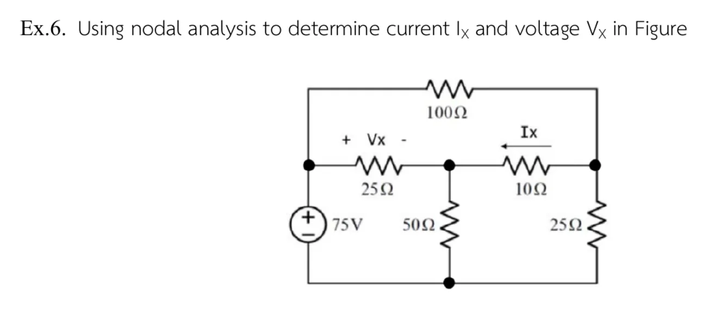
โจทย์แบบฝึกหัด Ex.6 · แตะรูปเพื่อขยายExercise Ex.6 · tap to enlarge
ดูเฉลยลายมือ (ไฟล์ Ex.2)See the handwritten solution (file Ex.2)
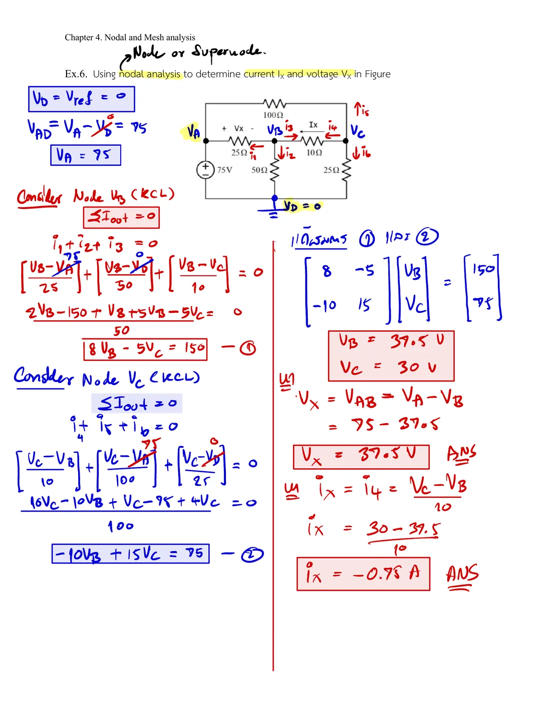
เฉลยลายมือแบบฝึกหัด Ex.6Handwritten solution of exercise Ex.6
ลองทำดู 1 — แรงดันโนดติดลบ
ข้อ 1 (Ex 1): \(v_1 = -18.125\) V แปลว่า โนด \(v_1\) ต่ำกว่าโนดอ้างอิง ป้ายของ \(v_1\) บนภาพแสดงค่าลบ
สไลด์บทที่ 4 หน้า 2–7, 20 · แบบฝึกหัด Ex.1 และ Ex.6 พร้อมเฉลย · Hayt §4.1, Practice 4.1, 4.2 และ Example 4.7
Try this 1 — a negative node voltage
Problem 1 (Ex 1): \(v_1 = -18.125\) V means node \(v_1\) is below the reference; its tag on the drawing shows the negative value.
The current in 2 Ω + 3 Ω works out to \(-3.625\) A in the direction written (down), so the dots in that branch run up.
Hover over the 2 Ω to read the real current and compare it with the last step of the solution.
Try this 2 — voltage sources save work
Problem 3 (Ex 3): there are 4 non-reference nodes, but three voltage sources go to the reference, so \(V_A, V_C, V_D\) are known at once and only one equation is left.
Problem 5 (exercise Ex.1): the 12 V source makes \(V_D = 12\) V, so the term of the 4 Ω between A and D is \((V_A - 12)/4\).
Question: in Ex 3, if the top-middle node (\(V_B\)) were the reference instead, how many unknowns would there be, and why is that messier?
Try this 3 — check the answer with KCL
Once solved, hover over every element joined to one node and add the currents leaving: they must add to zero (count the current sources too).
Problem 4 (homework 1): \(v_1 - v_2 = -1\) V means the 1 Ω carries 1 A from \(v_2\) to \(v_1\), so its dots run to the left.
Open "Shortcut: write the matrix G by inspection" under a problem, complete it, and see that multiplying each row by its LCD gives the very equation written from KCL.
Chapter 4 slides, pp. 2–7, 20 · exercises Ex.1 and Ex.6 with solutions · Hayt §4.1, Practice 4.1, 4.2 and Example 4.7